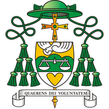
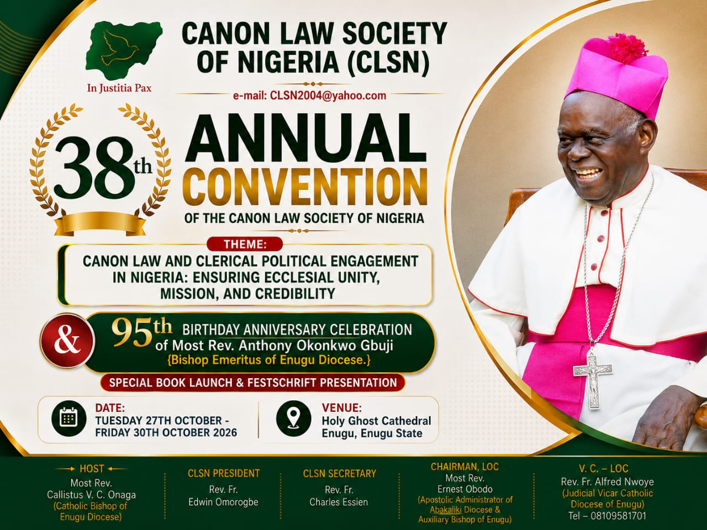

Convention & registration
Holy Ghost Cathedral, Enugu
Domus Sancti Spiritus Guest House

CLSN ENUGU 202638TH ANNUAL CONVENTIONCANON LAW SOCIETY OF NIGERIA
38th Annual Convention
Together in reflection. United in mission. Welcome to your digital companion for four days of prayer, dialogue and celebration.
IN JUSTITIA PAX — In justice, peace.

VIEW OFFICIAL CONVENTION FLYER ↗OUR CONVENTION THEME
Ensuring Ecclesial Unity, Mission and Credibility
A LIFE OF SERVICE
Birthday thanksgiving · Book launch
& Festschrift presentation
YOUR FOUR-DAY JOURNEY
Find your next session, prayer or moment of fellowship.
Times are shown in Nigerian time (WAT). The programme is subject to updates. Download the original programme.
IDEAS THAT INFORM OUR MISSION
Explore the voices and topics shaping this year’s conversation.
No matching papers. Try another name or topic.
Presenter photographs and paper documents will be added as they become available. Placeholder portraits are labelled below.
MOMENTS WE SHARE
Prayer, conversation and celebration — our convention in pictures.
Photographs will appear here as the convention unfolds.
Return to enjoy highlights from each day in Enugu.
Once photographs are available, tap a picture to enlarge it and download your favourite moments.
AT HOME IN ENUGU
Our convention home is Holy Ghost Cathedral, Enugu. Arrival and registration take place at Domus Sancti Spiritus Guest House.
Find the convention venue ↗Holy Ghost Cathedral, Enugu
Domus Sancti Spiritus Guest House
St. Joseph Catholic Church, Emene
Thanksgiving Mass at 10:00 am
Rev. Fr. Alfred Nwoye
Vice Chairman, Local Organising Committee
KEEP IT CLOSE
Keep a copy of the programme on your phone for easy reference.